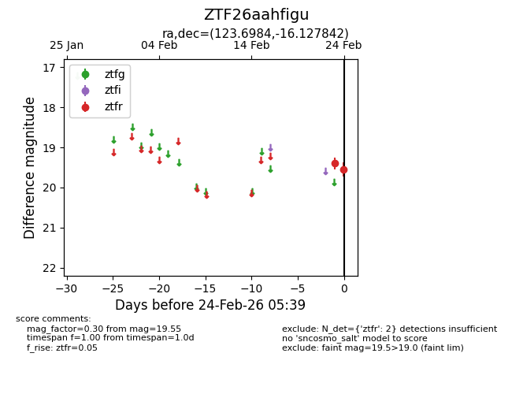
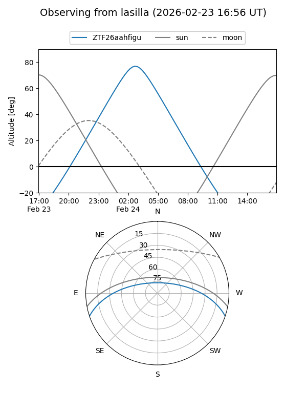
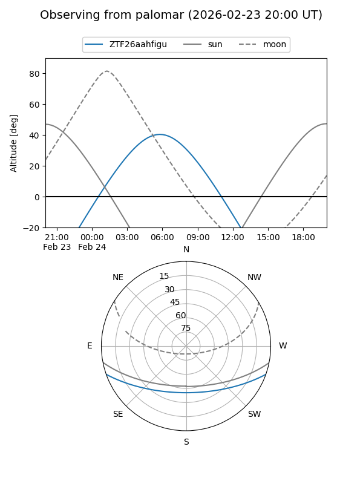

ZTF26aahfigu
Target ZTF26aahfigu at 2026-02-24 09:08
Aliases and brokers:
FINK: link
Lasair: link
ALeRCE: link
alt names
ZTF26aahfigu (ztf,fink_ztf)
Coordinates:
equatorial (ra, dec) = 123.6984,-16.12784
equatorial (HMS+DMS) = 08:14:47.62,-16:07:40.23
galactic (l, b) = (237.1087,+10.22315)
Flags:
Photometry:
last ztfr=19.55
2 ztfr detections
Lightcurve

Visibility


Additional plots